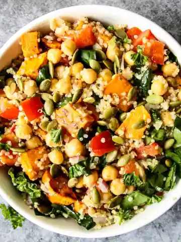
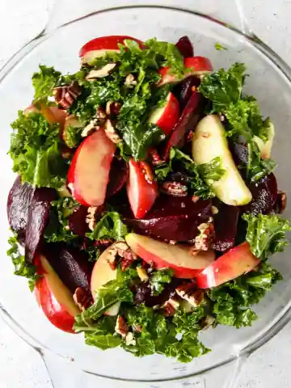

1.sweet potato quinoa salad

Preheat oven to 400° Peel the sweet potato and cut into ½ inch cubes. Put the cubes in a single layer on a parchment line baking sheet. Toss with olive oil and season with salt and pepper. Roast until they are fork tender and beginning to caramelize, about 30 minutes. Remove from the oven and allow to cool to room temperature. While sweet potato is in the oven, cook quinoa. Add quinoa and water to a small saucepan, bring to a boil. Reduce heat to low and cook 15 minutes until water is absorbed. Remove from heat and allow to cool to room temperature. In a small bowl, whisk together dressing ingredients. Toss cooled sweet potato cubes, quinoa, chickpeas, seeds, bell pepper, spinach sunflower seeds, and parsley together in a large bowl. Pour the dressing over the salad and gently toss to combine.
2.KALE AND BEET SALAD WITH APPLES
Preheat oven to 400° With cooking spray, lightly spray a piece of foil large enough to loosely wrap quartered beets. Place beets on the oiled side of the foil, and loosely wrap to make a sealed package. Put foil-wrapped beets on a baking sheet in the center of the oven and roast 30-45 minutes until tender. In the last 5 minutes of roasting time, spread walnuts on the baking sheet alongside the roasting beets to toast.
3.SALMON FRITTATA WITH SWEET POTATOES

Preheat oven to 350° Heat oil over medium high in a 10" oven proof skillet, such as cast iron. 1 tablespoon olive oil Add cubed sweet potato, and cook, stirring often, until softened, about 4 minutes. 1 medium sweet potato Add red onion and cook for one minute, until sweet potatoes are tender and slightly caramelized, . ¼ cup red onion Remove from heat and add salmon and spinach to skillet, arranging evenly in the pan. 1 ½ cups cooked salmon,1 ½ cups fresh baby spinach leaves Whisk together eggs, yogurt, and salt and pepper until combined. Pour egg mixture evenly over the skillet ingredients. Shake the pan a little to make sure it's evenly distributed. 6 large eggs,¼ cup Greek yogurt,½ teaspoon salt,½ teaspoon black pepper Bake in center of oven 15-20 minutes or until edges are pulling away from pan and middle is set. Garnish with parsley. ¼ cup chopped parsley or dill Cut into wedges and serve.